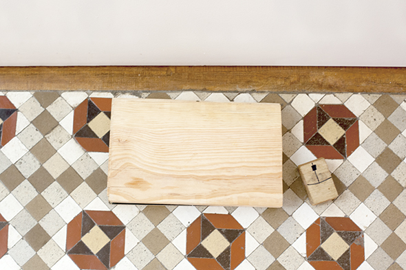
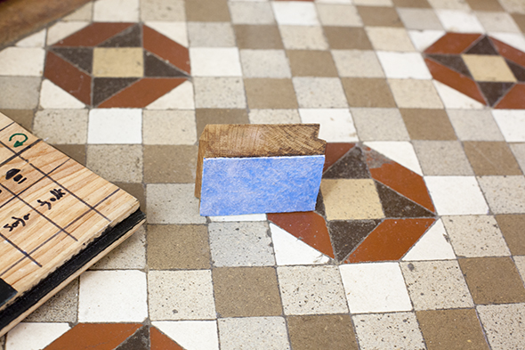

Laptop
Hannah hat ein Notebook aus ein paar übrig gebliebenen Hölzern gebaut. Die schwarze Farbe des Bildschirms ist Tafelfarbe. Unter dem Holzstück, welches die Maus ist, hat sie ein Stück Lappen geklebt ... so macht die Maus den Bildschirm, für neues Bemalen und Beschriften sauber.